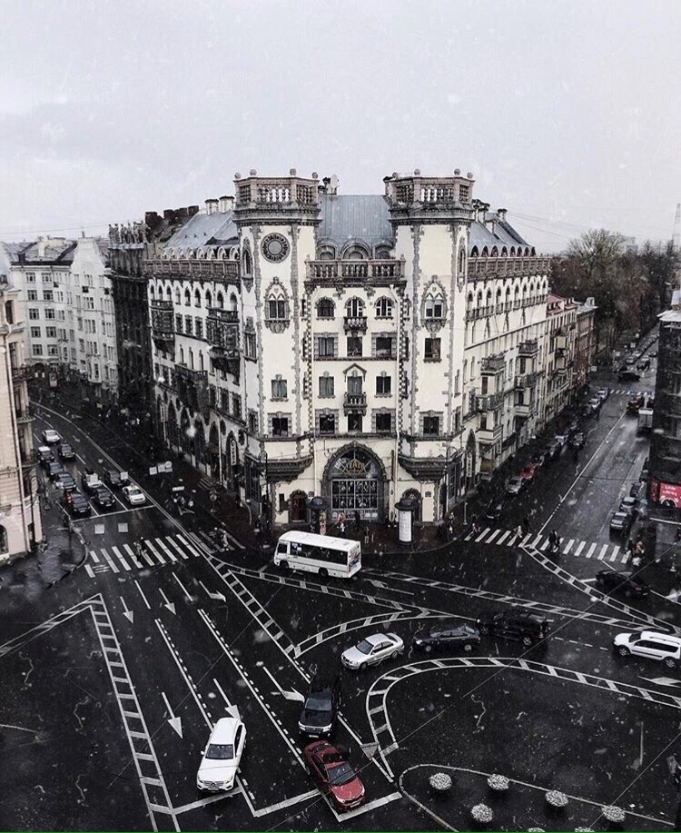
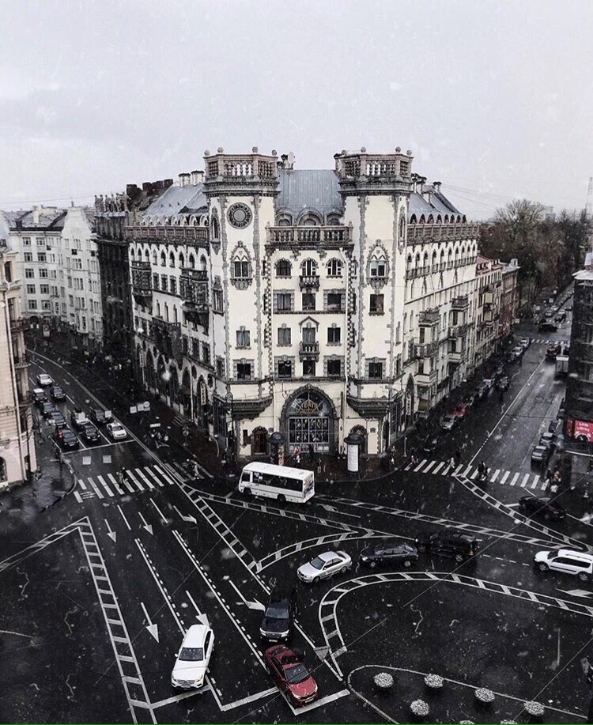

House number 77 on Bolshoi Prospekt of the Petrograd Side was built by the engineer-architect Konstantin Rosenstein and was owned by him. He was an employee of the Russian-Swedish concrete pipe factory Andrei B. Ellers. Rosenstein designed a pavilion of concrete pipes to represent the factory at the International Art and Industry Exhibition in 1908 in St. Petersburg on Kamenny Island.
In the same year he received permission from the City Duma to lay a new street on the Petrograd side and divided the wasteland into ten plots for the construction of profitable houses, stipulating with the future owners an indispensable condition – compliance with the general character of the street, its harmony. Rosenstein attracted the talented artist-architect A. E. Belogrud to work on the facades of his houses, while he himself was engaged in the technical and engineering implementation. For the first time in Russia, slag concrete was used for facade cladding. Beams more than 15 metres long from the street wall to the courtyard wall were ordered for the ceilings, which saved the house from destruction when a bomb hit its basement.


 
